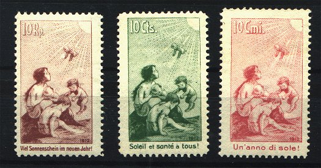
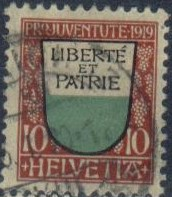
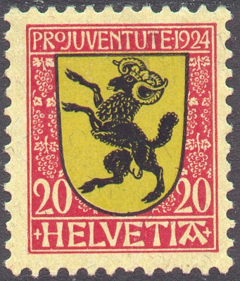

(Peter Winter forgery)
Return To Catalogue - Switzerland overview
Note: on my website many of the
pictures can not be seen! They are of course present in the
catalogue;
contact me if you want to purchase the catalogue.
In 1912 3 labels for the Children Welfare fund were issued, however, they are not stamps, inscription in German, French or Italian: 'Viel Sonnenschein im neuen Jahr!', 'Soleil et sante a tous!', 'Un'anno di sole!' (all in different colours):

At the backside of these stamps a text is written (different language for each stamp): 'Für die Jugend Der Ertrag dieser Weihnachts- marke dient zur Bekämpfung der Tuberkulose bei den Kindern' or 'Pour la Jeunesse Le produit sera affecté à la lutte contre la tuberculose chez les enfants'.
I know that the forger Peter Winter has made forgeries of at least the red label, examples:
(Peter Winter forgery)

(Peter Winter forgery on cut of letter with cancel)
(Reduced size)
5 (+5 c) green
This stamp has perforation 11 1/2 and watermark 'Cross'.
Value of the stamps |
|||
vc = very common c = common * = not so common ** = uncommon |
*** = very uncommon R = rare RR = very rare RRR = extremely rare |
||
| Value | Unused | Used | Remarks |
| 5 c | * | * | |
5 c green 10 c red
These stamps have perforation 11 1/2 and watermark 'Cross'.
Value of the stamps |
|||
vc = very common c = common * = not so common ** = uncommon |
*** = very uncommon R = rare RR = very rare RRR = extremely rare |
||
| Value | Unused | Used | Remarks |
| 5 c | ** | ** | |
| 10 c | R | *** | |
3 (+2) c violet 5 (+5) c green 10 +(5) c red
These stamps have perforation 11 1/2 and watermark 'Cross'.
Value of the stamps |
|||
vc = very common c = common * = not so common ** = uncommon |
*** = very uncommon R = rare RR = very rare RRR = extremely rare |
||
| Value | Unused | Used | Remarks |
| 3 c | *** | *** | |
| 5 c | ** | * | |
| 10 c | *** | *** | |
3 (+2) c violet 5 (+5) c green 10 +(5) c red
These stamps have perforation 11 1/2 and watermark 'Cross'.
Value of the stamps |
|||
vc = very common c = common * = not so common ** = uncommon |
*** = very uncommon R = rare RR = very rare RRR = extremely rare |
||
| Value | Unused | Used | Remarks |
| 3 c | *** | *** | |
| 5 c | *** | *** | |
| 10 c | *** | ** | |

(Uri and Geneva)
10 c red, black and yellow on yellow 15 c violet, black, red and yellow on yellow
These stamps have perforation 11 1/2 and watermark 'Cross'.
Value of the stamps |
|||
vc = very common c = common * = not so common ** = uncommon |
*** = very uncommon R = rare RR = very rare RRR = extremely rare |
||
| Value | Unused | Used | Remarks |
| 10 c | * | * | |
| 15 c | * | * | |

7 1/2 c grey, black and red 10 c red, black and green 15 c violet, black and red
These stamps have perforation 11 1/2 and watermark 'Cross'.
Value of the stamps |
|||
vc = very common c = common * = not so common ** = uncommon |
*** = very uncommon R = rare RR = very rare RRR = extremely rare |
||
| Value | Unused | Used | Remarks |
| 7 1/2 c | ** | ** | |
| 10 c | ** | ** | |
| 15 c | ** | * | |
7 1/2 c grey, black and red (Schwyz) 10 c red, black and blue (Zurich) 15 c violet, black, red and blue (Ticino)
These stamps have perforation 11 1/2 and watermark 'Cross'.
Value of the stamps |
|||
vc = very common c = common * = not so common ** = uncommon |
*** = very uncommon R = rare RR = very rare RRR = extremely rare |
||
| Value | Unused | Used | Remarks |
| 7 1/2 c | ** | ** | |
| 10 c | * | * | |
| 15 c | * | * | |
1921 Juventute issue
1922 Juventute issue: 5 c, 10 c and 20 c
(1922 40 c arms of Switzerland)

(Glaris and Schaffhausen)
In 1921 were issued 10 c (Valais), 20 c (Bern)
and 40 c (arms of Switzerland).
In 1922 were issued 5 c (Zug), 10 c (Fribourg), 20 c (Lucerne)
and 40 c (arms of Switzerland).
In 1923 were issued 5 c (Basel-City), 10 c (Glarus), 20 c
(Neuchatel) and 40 c (arms of Switzerland).
In 1924 were issued 5 c (Appenzell Inner Rhodes), 10 c
(Soloturn), 20 c (Schaffhausen) and 30 c (arms of Switzerland).
In 1925 were issued 5 c (St.Gallen), 10 c (Appenzell Outer
Rhodes), 20 c (Graubunden) and 30 c (arms of Switzerland).
In 1926 were issued 5 c (Thurgau), 10 c (Basel-Country), 20 c
(Aargau) and 30 c (arms of Switzerland).
5 c lilac and yellow on grey 10 c green and red on green 20 c red 30 c black and blue
5 c lilac, red and black 10 c blue, red and black 20 c red and black 30 c blue and red
5 c violet and red 10 c brown and grey 20 c brown and blue 30 c blue
5 c green, black and blue 10 c lilac, black and red 20 c red, black, green and yellow 30 c blue
5 c green 10 c violet 20 c red 30 c violet
5 c + 5 c green and red 10 c + 5 c orange 20 c + 5 c red 30 c + 10 c blue
5 c + 5 c green and brown 10 c + 5 c violet and brown 20 c + 5 c red and brown 30 c + 10 c blue
5 c green and yellow ('Appenzell')
10 c violet and yellow ('Valais')
20 c red and yellow ('Graubunden')
30 c blue (A.v.Haller)
5 c green and yellow ('Baselland')
10 c violet and yellow ('Luzern')
20 c red and yellow ('Geneve')
30 c blue (Stefano Franscini)
5 c green (Hans Georg Naseli)
10 c violet and yellow ('Neuchatel')
20 c red and yellow ('Schwyz')
30 c blue and yellow ('Zurich)
More pro-juventute stamps followed in the years to come, but with different designs.
{kind=link}